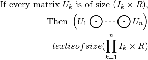

API reference
tensorly: Manipulating the backend with a unified interface
For each backend, tensorly provides the following uniform functions:
|
Changes the backend to the specified one |
Returns the name of the current backend |
|
|
Returns the context of a tensor |
|
Tensor class |
|
Returns if obj is a tensor for the current backend |
|
Return the shape of a tensor |
|
Return the number of dimensions of a tensor |
|
Returns a copy of the tensor as a NumPy array. |
|
Return a copy of the given tensor |
|
Concatenate tensors along an axis. |
|
Gives a new shape to a tensor without changing its data. |
|
Permute the dimensions of a tensor. |
|
Move axes of a tensor to new positions. |
|
Return evenly spaced values within a given interval. |
|
Return a new tensor of given shape and type, filled with ones. |
|
Return a new tensor of given shape and type, filled with zeros. |
|
Return at tensor of zeros with the same shape and type as a given tensor. |
|
Return a 2-D tensor with ones on the diagonal and zeros elsewhere. |
|
Return elements, either from x or y, depending on condition. |
|
Clip the values of a tensor to within an interval. |
|
The max value in a tensor. |
|
The min value in a tensor. |
|
Returns if all array elements in a tensor are True. |
|
Compute the mean of a tensor, optionally along an axis. |
|
Compute the sum of a tensor, optionally along an axis. |
|
Compute the product of a tensor, optionally along an axis. |
|
Computes the element-wise sign of the given input tensor. |
|
Computes the element-wise absolute value of the given input tensor. |
|
Computes the element-wise sqrt of the given input tensor. |
|
Computes the l-order norm of a tensor. |
|
Dot product of two tensors. |
|
Kronecker product of two tensors. |
|
Solve a linear matrix equation, or system of linear scalar equations. |
|
Compute the qr factorization of a matrix. |
|
Khatri-Rao product of a list of matrices |
|
Computes a fast partial SVD on matrix |
tensorly.base: Core tensor functions
|
Returns the mode-mode unfolding of tensor with modes starting at 0. |
|
Refolds the mode-mode unfolding into a tensor of shape shape |
|
Vectorises a tensor |
|
Folds a vectorised tensor back into a tensor of shape shape |
|
Partially unfolds a tensor while ignoring the specified number of dimensions at the beginning and the end. |
|
Re-folds a partially unfolded tensor |
|
Partially vectorises a tensor |
|
Refolds a partially vectorised tensor into a full one |
tensorly.kruskal_tensor: Tensors in the Kruskal format
Core operations on Kruskal tensors.
|
Turns the Khatri-product of matrices into a full tensor |
|
Turns the khatri-product of matrices into an unfolded tensor |
|
Turns the khatri-product of matrices into a vector |
|
n-mode product of a Kruskal tensor and a matrix or vector at the specified mode |
|
mode-n unfolding times khatri-rao product of factors |
tensorly.tucker_tensor: Tensors in Tucker format
Core operations on Tucker tensors.
|
Converts the Tucker tensor into a full tensor |
|
Converts the Tucker decomposition into an unfolded tensor (i.e. |
|
Converts a Tucker decomposition into a vectorised tensor |
|
n-mode product of a Tucker tensor and a matrix or vector at the specified mode |
tensorly.mps_tensor: Tensors in Matrix-Product-State format
Core operations on tensors in Matrix Product State (MPS) format, also known as Tensor-Train (TT)
|
Returns the full tensor whose MPS decomposition is given by ‘factors’ |
|
Returns the unfolding matrix of a tensor given in MPS (or Tensor-Train) format |
|
Returns the tensor defined by its MPS format (‘factors’) into |
tensorly.tenalg: Tensor algebra
The tensorly.tenalg module contains utilities for Tensor Algebra
operations such as khatri-rao or kronecker product, n-mode product, etc.
|
Khatri-Rao product of a list of matrices |
|
Kronecker product of a list of matrices |
|
n-mode product of a tensor and a matrix or vector at the specified mode |
|
n-mode product of a tensor and several matrices or vectors over several modes |
|
Soft-thresholding operator |
|
Singular value thresholding operator |
|
Procrustes operator |
|
Generalised inner products between tensors |
|
Tensor contraction between two tensors on specified modes |
tensorly.decomposition: Tensor Decomposition
The tensorly.decomposition module includes utilities for performing
tensor decomposition such as CANDECOMP-PARAFAC and Tucker.
|
CANDECOMP/PARAFAC decomposition via alternating least squares (ALS) Computes a rank-rank decomposition of tensor [R3] such that, |
|
Non-negative CP decomposition |
|
Random subsample of the Khatri-Rao product of the given list of matrices |
|
Randomised CP decomposition via sampled ALS |
|
Tucker decomposition via Higher Order Orthogonal Iteration (HOI) |
|
Partial tucker decomposition via Higher Order Orthogonal Iteration (HOI) |
|
Non-negative Tucker decomposition |
|
Robust Tensor PCA via ALM with support for missing values |
|
MPS decomposition via recursive SVD |
tensorly.regression: Tensor Regression
The tensorly.regression module includes classes for performing Tensor
Regression.
|
Tucker tensor regression |
|
Kruskal tensor regression |
tensorly.metrics: Performance measures
The tensorly.metrics module includes utilities to measure performance
(e.g. regression error).
|
Returns the mean squared error between the two predictions |
|
Returns the regularised mean squared error between the two predictions (the square-root is applied to the mean_squared_error) |
tensorly.random: Sampling random tensors
|
Generates a random CP tensor |
|
Generates a random Tucker tensor |
|
Generates a random MPS/ttrain tensor |
|
Returns a valid RandomState |
tensorly.datasets: Creating and loading data
The tensorly.datasets module includes utilities to load datasets and
create synthetic data, e.g. for testing purposes.
|
Generates an image for regression testing |
tensorly.contrib: Experimental features
A module for experimental functions
Allows to add quickly and test new functions for which the API is not necessarily fixed
MPS (tensor-train) decomposition via cross-approximation (TTcross) [1] |
Sparse tensor operations
Enables tensor operations on sparse tensors. Currently, the following decomposition methods are supported (for the NumPy backend, using Sparse):
-
abs(tensor) Computes the element-wise absolute value of the given input tensor.
- Parameters
tensor : tensor
- Returns
out : tensor
-
all(tensor) Returns if all array elements in a tensor are True.
- Parameters
tensor : tensor
- Returns
bool
-
arange(start=0, stop=None, step=None) Return evenly spaced values within a given interval.
- Parameters
start : number, optional
Start of the interval, inclusive. Default is 0.
stop : number
End of the interval, exclusive.
step : number, optional
Spacing between values. Default is 1.
- Returns
tensor
-
argmax(a, axis=None, out=None) Returns the indices of the maximum values along an axis.
- Parameters
a : array_like
Input array.
axis : int, optional
By default, the index is into the flattened array, otherwise along the specified axis.
out : array, optional
If provided, the result will be inserted into this array. It should be of the appropriate shape and dtype.
- Returns
index_array : ndarray of ints
Array of indices into the array. It has the same shape as a.shape with the dimension along axis removed.
See also
ndarray.argmax,argminamaxThe maximum value along a given axis.
unravel_indexConvert a flat index into an index tuple.
Notes
In case of multiple occurrences of the maximum values, the indices corresponding to the first occurrence are returned.
Examples
>>> a = np.arange(6).reshape(2,3) + 10 >>> a array([[10, 11, 12], [13, 14, 15]]) >>> np.argmax(a) 5 >>> np.argmax(a, axis=0) array([1, 1, 1]) >>> np.argmax(a, axis=1) array([2, 2])
Indexes of the maximal elements of a N-dimensional array:
>>> ind = np.unravel_index(np.argmax(a, axis=None), a.shape) >>> ind (1, 2) >>> a[ind] 15
>>> b = np.arange(6) >>> b[1] = 5 >>> b array([0, 5, 2, 3, 4, 5]) >>> np.argmax(b) # Only the first occurrence is returned. 1
-
argmin(a, axis=None, out=None) Returns the indices of the minimum values along an axis.
- Parameters
a : array_like
Input array.
axis : int, optional
By default, the index is into the flattened array, otherwise along the specified axis.
out : array, optional
If provided, the result will be inserted into this array. It should be of the appropriate shape and dtype.
- Returns
index_array : ndarray of ints
Array of indices into the array. It has the same shape as a.shape with the dimension along axis removed.
See also
ndarray.argmin,argmaxaminThe minimum value along a given axis.
unravel_indexConvert a flat index into an index tuple.
Notes
In case of multiple occurrences of the minimum values, the indices corresponding to the first occurrence are returned.
Examples
>>> a = np.arange(6).reshape(2,3) + 10 >>> a array([[10, 11, 12], [13, 14, 15]]) >>> np.argmin(a) 0 >>> np.argmin(a, axis=0) array([0, 0, 0]) >>> np.argmin(a, axis=1) array([0, 0])
Indices of the minimum elements of a N-dimensional array:
>>> ind = np.unravel_index(np.argmin(a, axis=None), a.shape) >>> ind (0, 0) >>> a[ind] 10
>>> b = np.arange(6) + 10 >>> b[4] = 10 >>> b array([10, 11, 12, 13, 10, 15]) >>> np.argmin(b) # Only the first occurrence is returned. 0
-
clip(tensor, a_min=None, a_max=None) Clip the values of a tensor to within an interval.
Given an interval, values outside the interval are clipped to the interval edges. For example, if an interval of
[0, 1]is specified, values smaller than 0 become 0, and values larger than 1 become 1.Not more than one of a_min and a_max may be None.
- Parameters
tensor : tl.tensor
The tensor.
a_min : scalar, optional
Minimum value. If None, clipping is not performed on lower bound.
a_max : scalar, optional
Maximum value. If None, clipping is not performed on upper bound.
- Returns
tensor
-
concatenate(tensors, axis=0) Concatenate tensors along an axis.
- Parameters
tensors : list of tensor
The tensors to concatenate. Non-empty tensors provided must have the same shape, except along the specified axis.
axis : int, optional
The axis to concatenate on. Default is 0.
- Returns
tensor
-
context(tensor) Returns the context of a tensor
Creates a dictionary of the parameters characterising the tensor.
- Parameters
tensor : tensorly.tensor
- Returns
context : dict
Examples
>>> import tensorly as tl >>> tl.set_backend('numpy')
Imagine you have an existing tensor tensor:
>>> tensor = tl.tensor([0, 1, 2], dtype=tl.float32)
The context, here, will simply be the dtype:
>>> tl.context(tensor) {'dtype': dtype('float32')}
Note that, if you were using, say, PyTorch, the context would also include the device (i.e. CPU or GPU) and device ID.
If you want to create a new tensor in the same context, use this context:
>>> new_tensor = tl.tensor([1, 2, 3], **tl.context(tensor))
-
copy(tensor) Return a copy of the given tensor
-
dot(a, b) Dot product of two tensors.
- Parameters
a, b : tensor
The tensors to compute the dot product of.
- Returns
tensor
-
eye(N) Return a 2-D tensor with ones on the diagonal and zeros elsewhere.
- Parameters
N : int
Number of rows in the output.
-
get_backend()[source] Returns the name of the current backend
-
is_tensor(obj) Returns if obj is a tensor for the current backend
-
kr(matrices, weights=None, mask=None) Khatri-Rao product of a list of matrices
This can be seen as a column-wise kronecker product.
- Parameters
matrices : list of tensors
List of 2D tensors with the same number of columns, i.e.:
for i in len(matrices): matrices[i].shape = (n_i, m)
- Returns
khatri_rao_product : tensor of shape
(prod(n_i), m)Where
prod(n_i) = prod([m.shape[0] for m in matrices])(i.e. the product of the number of rows of all the matrices in the product.)
Notes
Mathematically:

-
kron(a, b) Kronecker product of two tensors.
- Parameters
a, b : tensor
The tensors to compute the kronecker product of.
- Returns
tensor
-
max(tensor) The max value in a tensor.
- Parameters
tensor : tensor
- Returns
scalar
-
mean(tensor, axis=None) Compute the mean of a tensor, optionally along an axis.
- Parameters
tensor : tensor
axis : int, optional
If provided, the mean is computed along this axis.
- Returns
out : scalar or tensor
-
min(tensor) The min value in a tensor.
- Parameters
tensor : tensor
- Returns
scalar
-
moveaxis(tensor, source, destination) Move axes of a tensor to new positions.
- Parameters
tensor : tl.tensor
source : int or sequence of int
Original positions of the axes to move. These must be unique.
destination : int or sequence of int
Destination positions for each of the original axes. These must also be unique.
- Returns
tensor
-
ndim(tensor) Return the number of dimensions of a tensor
-
norm(tensor, order=2, axis=None) Computes the l-order norm of a tensor.
- Parameters
tensor : tl.tensor
order : int
axis : int or tuple
- Returns
float or tensor
If axis is provided returns a tensor.
-
ones(shape, dtype=None) Return a new tensor of given shape and type, filled with ones.
- Parameters
shape : int or sequence of ints
Shape of the new tensor.
dtype : data-type, optional
The desired data-type for the tensor.
-
override_module_dispatch(module_name, getter_fun, dir_fun)[source] Override the module’s dispatch mechanism
In Python >= 3.7, we use module’s __getattr__ and __dir__ On older versions, we override the sys.module[__name__].__class__
-
partial_svd(matrix, n_eigenvecs=None) Computes a fast partial SVD on matrix
If n_eigenvecs is specified, sparse eigendecomposition is used on either matrix.dot(matrix.T) or matrix.T.dot(matrix).
- Parameters
matrix : tensor
A 2D tensor.
n_eigenvecs : int, optional, default is None
If specified, number of eigen[vectors-values] to return.
- Returns
U : 2-D tensor, shape (matrix.shape[0], n_eigenvecs)
Contains the right singular vectors
S : 1-D tensor, shape (n_eigenvecs, )
Contains the singular values of matrix
V : 2-D tensor, shape (n_eigenvecs, matrix.shape[1])
Contains the left singular vectors
-
prod(tensor, axis=None) Compute the product of a tensor, optionally along an axis.
- Parameters
tensor : tensor
axis : int, optional
If provided, the product is computed along this axis.
- Returns
out : scalar or tensor
-
qr(a) Compute the qr factorization of a matrix.
Factor the matrix a as qr, where q is orthonormal and r is upper-triangular.
- Parameters
a : tensor, shape (M, N)
Matrix to be factored.
- Returns
Q, R : tensor
-
reshape(tensor, newshape) Gives a new shape to a tensor without changing its data.
- Parameters
tensor : tl.tensor
newshape : int or tuple of ints
The new shape should be compatible with the original shape. If an integer, then the result will be a 1-D tensor of that length.
- Returns
tensor
-
set_backend(backend, local_threadsafe=False)[source] Changes the backend to the specified one
- Parameters
backend : tensorly.Backend or str
name of the backend to load or Backend Class
local_threadsafe : bool, optional, default is False
If False, set the backend as default for all threads
-
shape(tensor) Return the shape of a tensor
-
sign(tensor) Computes the element-wise sign of the given input tensor.
- Parameters
tensor : tensor
- Returns
out : tensor
-
solve(a, b) Solve a linear matrix equation, or system of linear scalar equations.
Computes the “exact” solution, x, of the well-determined, i.e., full rank, linear matrix equation ax = b.
- Parameters
a : tensor, shape (M, M)
The coefficient matrix.
b : tensor, shape (M,) or (M, K)
The ordinate values.
- Returns
x : tensor, shape (M,) or (M, K)
Solution to the system a x = b. Returned shape is identical to b.
-
sqrt(tensor) Computes the element-wise sqrt of the given input tensor.
- Parameters
tensor : tensor
- Returns
out : tensor
-
stack(arrays, axis=0, out=None) Join a sequence of arrays along a new axis.
The axis parameter specifies the index of the new axis in the dimensions of the result. For example, if
axis=0it will be the first dimension and ifaxis=-1it will be the last dimension.New in version 1.10.0.
- Parameters
arrays : sequence of array_like
Each array must have the same shape.
axis : int, optional
The axis in the result array along which the input arrays are stacked.
out : ndarray, optional
If provided, the destination to place the result. The shape must be correct, matching that of what stack would have returned if no out argument were specified.
- Returns
stacked : ndarray
The stacked array has one more dimension than the input arrays.
See also
concatenateJoin a sequence of arrays along an existing axis.
splitSplit array into a list of multiple sub-arrays of equal size.
blockAssemble arrays from blocks.
Examples
>>> arrays = [np.random.randn(3, 4) for _ in range(10)] >>> np.stack(arrays, axis=0).shape (10, 3, 4)
>>> np.stack(arrays, axis=1).shape (3, 10, 4)
>>> np.stack(arrays, axis=2).shape (3, 4, 10)
>>> a = np.array([1, 2, 3]) >>> b = np.array([2, 3, 4]) >>> np.stack((a, b)) array([[1, 2, 3], [2, 3, 4]])
>>> np.stack((a, b), axis=-1) array([[1, 2], [2, 3], [3, 4]])
-
sum(tensor, axis=None) Compute the sum of a tensor, optionally along an axis.
- Parameters
tensor : tensor
axis : int, optional
If provided, the sum is computed along this axis.
- Returns
out : scalar or tensor
-
tensor(data, **context) Tensor class
Returns a tensor on the specified context, depending on the backend.
Examples
>>> import tensorly as tl >>> tl.set_backend('numpy') >>> tl.tensor([1, 2, 3], dtype=tl.int64) array([1, 2, 3])
-
to_numpy(tensor) Returns a copy of the tensor as a NumPy array.
- Parameters
tensor : tl.tensor
- Returns
numpy_tensor : numpy.ndarray
-
transpose(tensor) Permute the dimensions of a tensor.
- Parameters
tensor : tensor
-
where(condition, x, y) Return elements, either from x or y, depending on condition.
- Parameters
condition : tensor
When True, yield element from x, otherwise from y.
x, y : tensor
Values from which to choose.
- Returns
tensor
-
zeros(shape, dtype=None) Return a new tensor of given shape and type, filled with zeros.
- Parameters
shape : int or sequence of ints
Shape of the new tensor.
dtype : data-type, optional
The desired data-type for the tensor.
-
zeros_like(tensor) Return at tensor of zeros with the same shape and type as a given tensor.
- Parameters
tensor : tensor
|
Tucker decomposition via Higher Order Orthogonal Iteration (HOI) |
|
Partial tucker decomposition via Higher Order Orthogonal Iteration (HOI) |
Non-negative Tucker decomposition |
|
|
Robust Tensor PCA via ALM with support for missing values |
|
CANDECOMP/PARAFAC decomposition via alternating least squares (ALS) Computes a rank-rank decomposition of tensor [R14] such that, |
Non-negative CP decomposition |